The Unboxing Experience
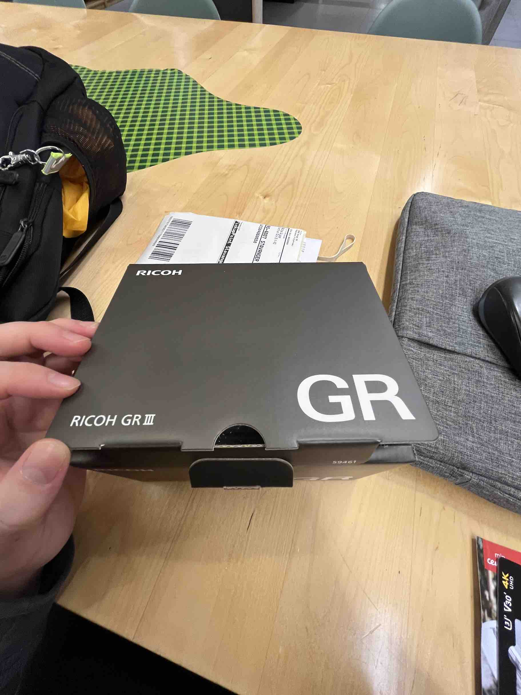
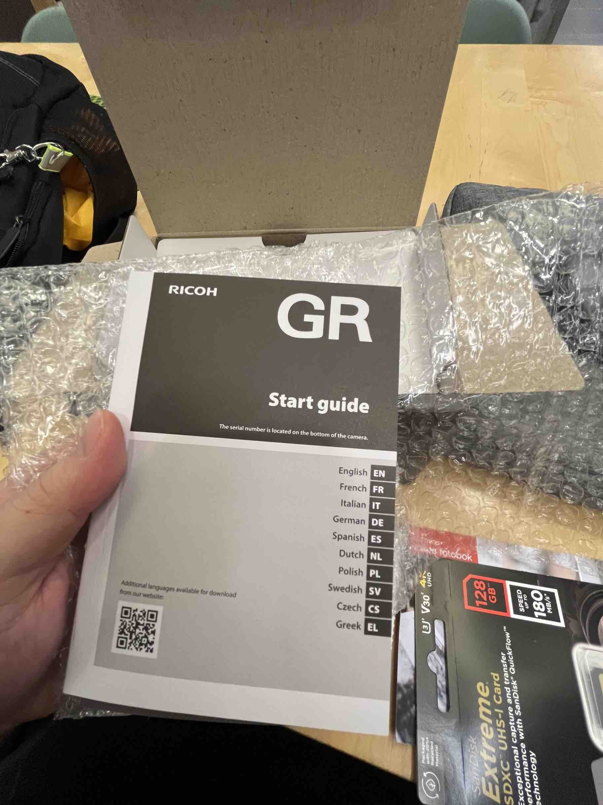
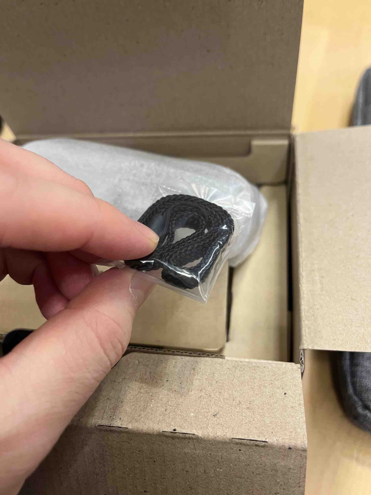
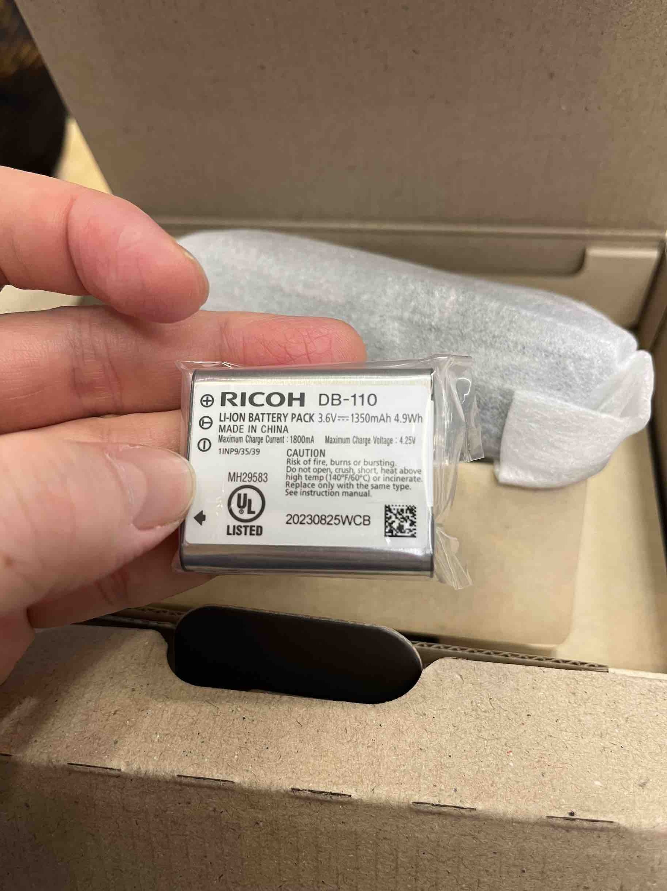
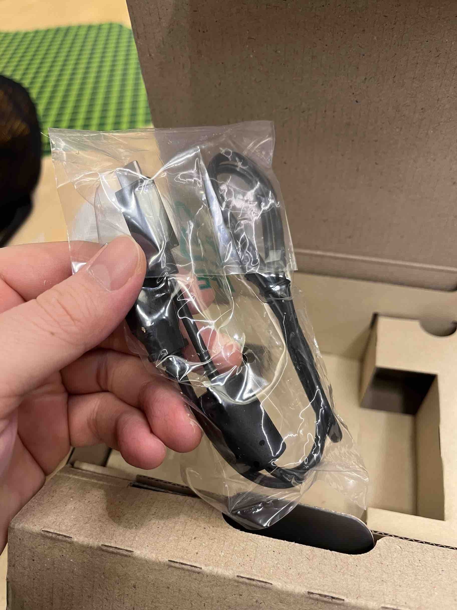
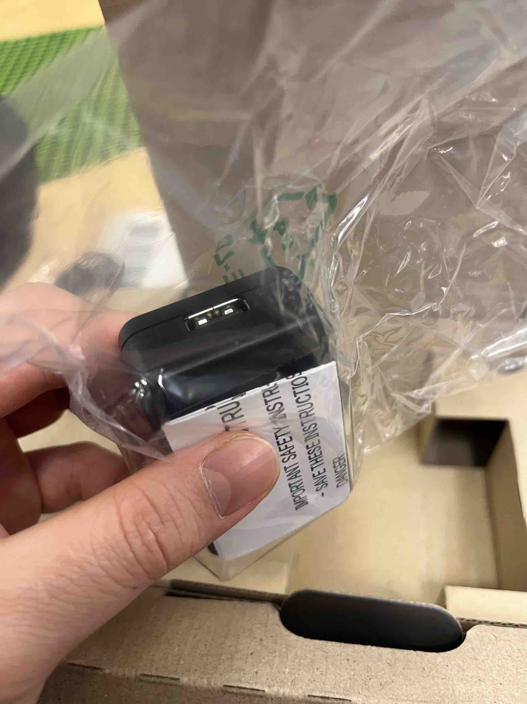
Buying a camera like this is not an easy feat, cause the camera has been around for quite sometimes and I am in Norway. Luckily, unlike the rare Fuji X70, some camera shops around my place still has one, and that’s what I got as a Winter present (if you may). I personally get the camera from CEWE japan photo shops. They have some shops around Norway, and one near my place to pick up the camera.
Upon unboxing, what I notice is the box is thick and sturdy, inside you will find manual, battery, usb-A to usb-C cable (which is nice), and head charger. There is also a loop for you to put onto the ricoh’s body - you will understand why once you hold the ricoh.
Holding the Camera
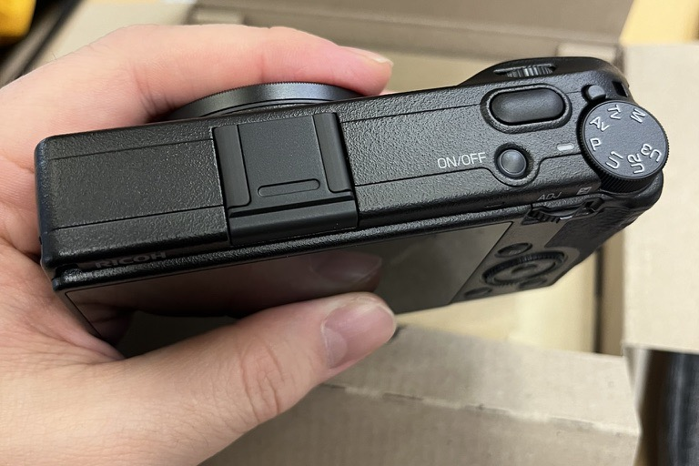
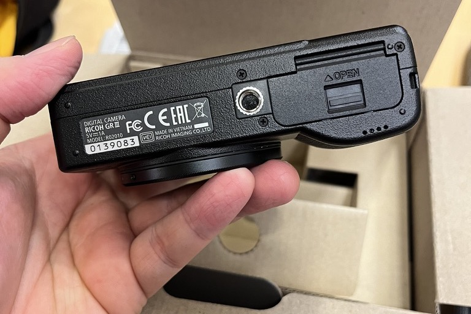
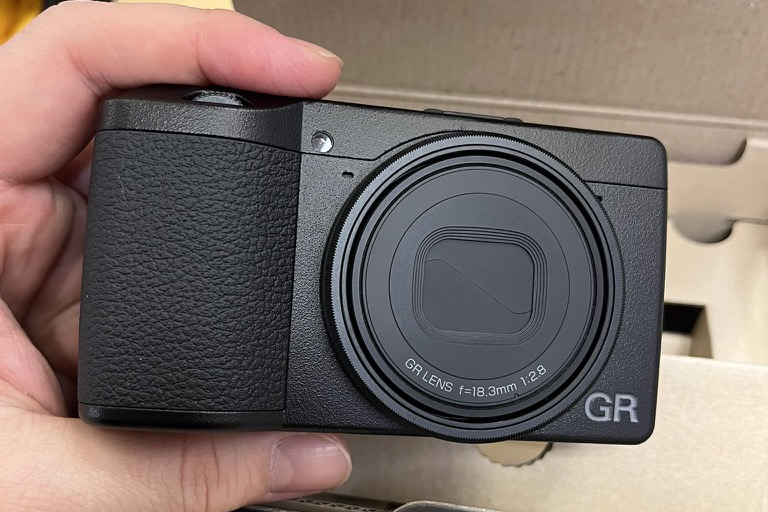
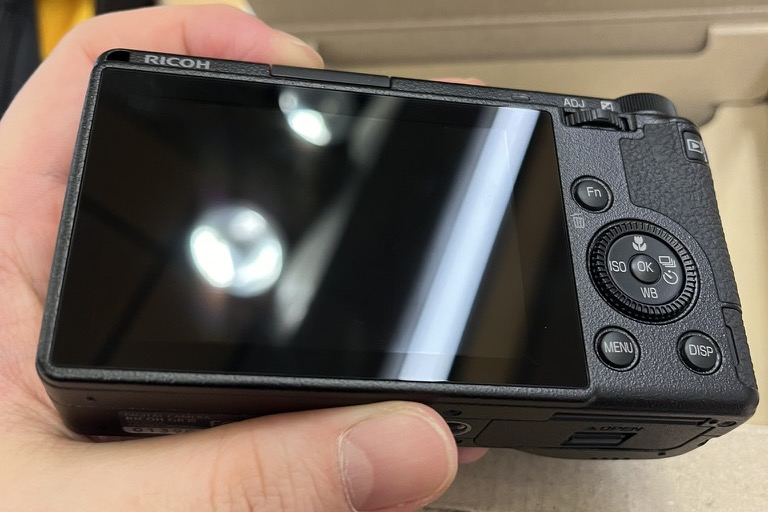
I have small mirrorless before (FUJI X70) so it is not a completely an alien feeling, but it never cease to amaze me how a compact camera like this could have an image quality like this has. The body itself is plastick, not too many metal-made parts I can tell from just holding it - so I would use the loop to help me avoid dropping this delicate thing to the ground. There is a hot shoe for an accessories - which I don’t have yet. Else, everything else looks “normal”, a power button, shutter, and choice of mode (aperture mode, shutter speed mode, etc).
The bottom section is your battery and micro-SD card slot. There is nothing unusual about this, but I always feel the locking system in here would worn-out over time. There is also a screw-hole for a stand if you feel like it. The charging port would be close to the side of the battery, it is just located on the side rather than at the bottom.
The front is where the magic comes from, the 24MP APS-C sensor. I won’t bore you with technical specs, you can read that someplace else, but this is impressive considering the same sensor was used by bigger camera like Sony A6400. One thing to note is the lens is 18.3mm f/2.8, kinda like your modern smartphone camera view. The lens is a protruding lens, so be careful not to put it against something when turning it on. There is a flash, some protruding body part that has some rubbery material – kinda helps your gripping when holding the camera given its smaller body.
The back view is where you find the big LCD screen (although not flippable), enough for most but may need some help when shooting during summer time if you need more details. The LCD is touch screen too, so navigating photo, zoom-in and out photo can be done via touchscreen. Including my favourite; setting up the focus point. Other than that, anything else can be controlled via buttons, lots of it.
Things I Dislike
During the past weeks, I have been using ricoh to shoot most pictures I will share in the next chapter. Some I loved, some are not, but the one I can’t control is the shooting experience. To me, this is not a cheap camera, so you need to understand what you were getting into before buying this camera. And if you are like me, coming from FUJI world, especially X70, you will relate to a lot of things I have to say about ricoh gr iii.
Shooting-Mode Selection
Maybe I am biased, but FUJI to me has nailed the shooting experience for a mirrorless camera. You want to set to Aperture-priority? Set the aperture-ring to A, and change the shutter-speed any value you want. Same thing with shutter-speed priority. In ricoh setting (like any other cameras too), I have to select the mode directly from the menu located at the upper body of the camera (AV for aperture-priority, TV for shutterspeed-priority). It is 3 clicks away, but I still have to look. In FUJI, it is a muscle-memory, much-much better. Maybe a different of 5-10 seconds, but in street photography, timing is vital.
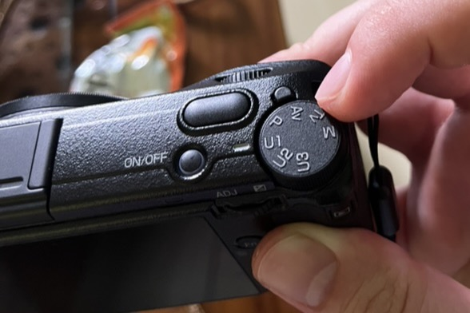
Fixed LCD Screen
There are multiple times, I wish I can flip, move the LCD screen. Situation like when the sunlight is too bright, and I wanted to shoot from the hip, using X70 I can do that. Or in some situations where I want to take a higher POV shots, I can flip it back towards me so I can see the shots when holding the camera higher up. And a 180 degree flip screen enabling a selfie is a nice addition in rare occasion you need high quality photo of you and your background.

Small Battery
Weighting less than its counterpart (X70) by around 100 grams make ricoh a pleasant camera to bring around, and move around but that cost the experience of shooting due to short battery time. My experience using it, ricoh barely make a day of 4-6hrs shooting, whereas X70 can make it through the afternoon or night (in a good day). Largely because the body is smaller, battery perhaps smaller capacity too, but also the speed when framing and executing the shoots are adding up too. E.g. everytime you turn the camera ona, there will be protruding lens coming out, this takes energy from battery too. Those little things.
Under/Overexpose
I never have this issue using Fujiflm X70, but Ricoh GR III somewhat appears to be underexposed most of the time if I am not paying attention. Maybe that is the way it was setup, maybe it was my wrong setting, either way I almost never get it right from the get-go, and have to tinkering a bit in a different setting. The AE feature pales in comparison to X70, at least to my taste. In this photo below, I did not realize I was underexposed and the phot turns out to be like this,
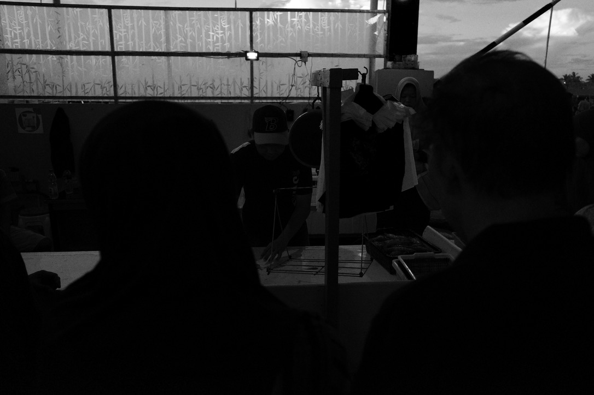
Things I Like
It is not all rainbows and butterfly, but there are plenty to love about ricoh gr and even some are superior to fujiflm.
Faster Autofocus
What I really notice right of the bat is how much faster and reliable the AF system in ricoh is. In my X70 time, at least 30% of my shots can use a better focus, and sometimes those shots I really liked ended up in the garbage bin due to poor autofocus. I rarely have this issue with ricoh gr, especially if I am in aperture mode with a lot of lights coming to the lens. Whether using snap-focus, or multi-point focus, ricoh gr always gives me confidence that I can trust the photo is in focus.
Another thing that helps is the 4-axis stabilizer, that really helps during low lights, allowing for less shaky camera, hence longer shutter speed, enabling longer exposure to lights.
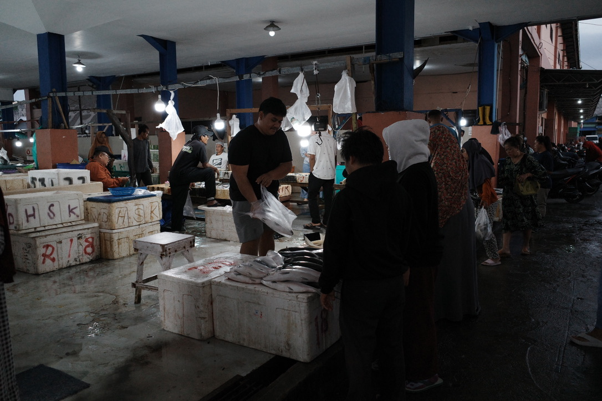
Film Simulations
Saving the best for the last, I am grown to love black&white, and negative film simulation of ricoh. The black&white in particular has a balanced tone to preserve those details, while negative has that soft, hue-down, film simulation. Negative, positive, and softB&W are the most used simulation I used in my photos taking so far.
I don’t want to extend the writing anymore that it needs to be, so I will let the photos take care of the explanation…
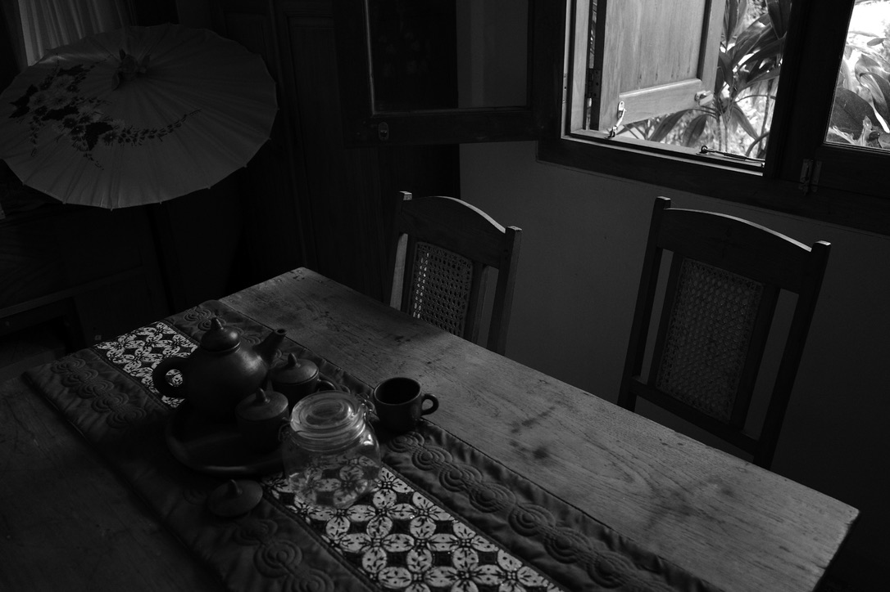
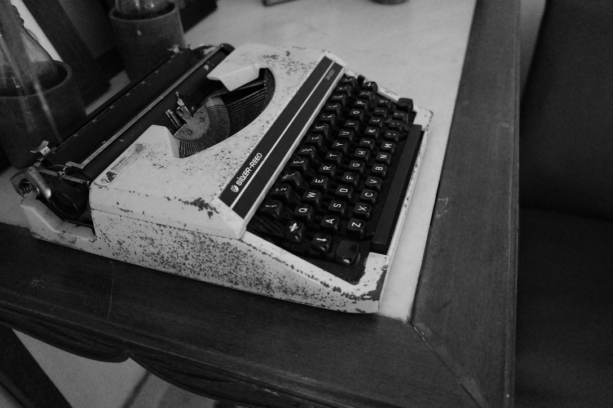
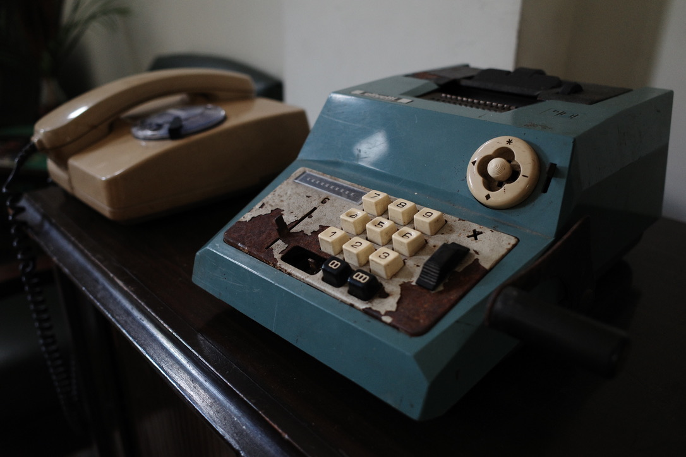

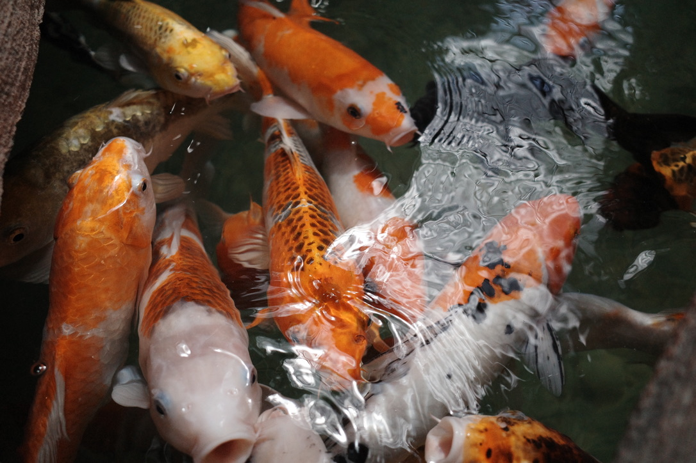
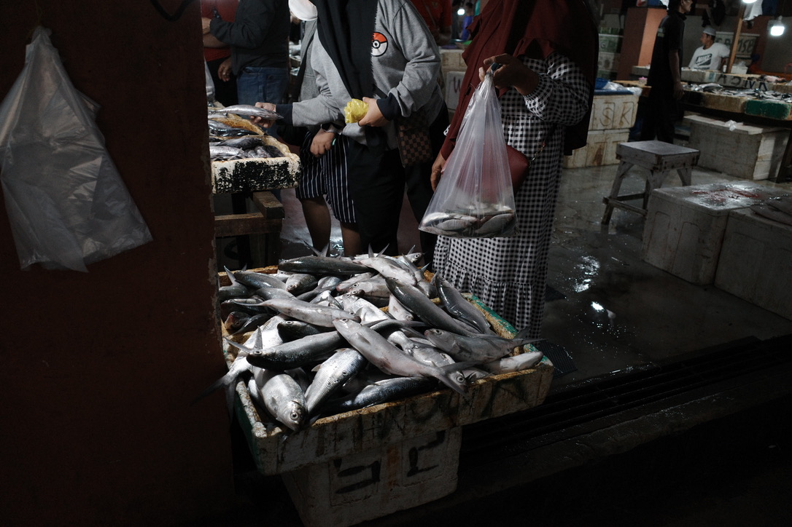
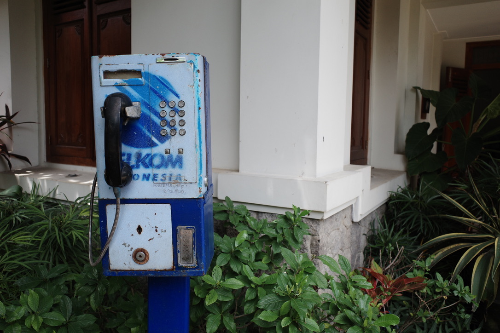
Closing Words
There isn’t enough competition for this kind of mirrorless in this weight and quality. The closest one is FUJIFILM X70, which I also had used before. Some features like 4-axis body stabilization, 24MP sensor are hard to beat, considering the X70 has not been updated (the equivalent of X70 is actually GR II, not III), and you cannot really buy a new X70 now.
I do love the film simulation from this camera, and I do think the image quality is superb, particularly the focus quality. The lacks of quick ability to change aperture ring is not specific to ricoh, most manufacturer do it too. My only bummer is, Ricoh should have increase the weight by 100-150gm if it means getting more juice out of their small battery.
Till next time…
Citation
@online{arie_wijaya2024,
author = {Arie Wijaya, Aditya},
title = {Ricoh {GR} {III} - {Not} {Quite} {Just} {Yet}},
date = {2024-02-25},
url = {https://adtarie.net/posts/20240225-ricohgriii-short-term/},
langid = {en}
}